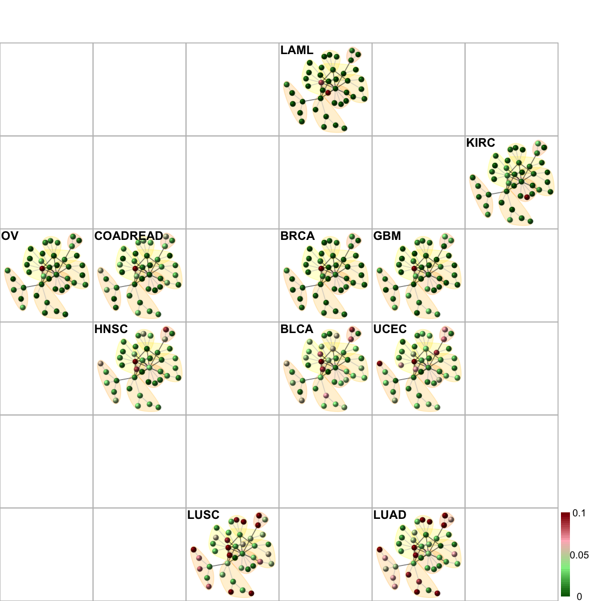
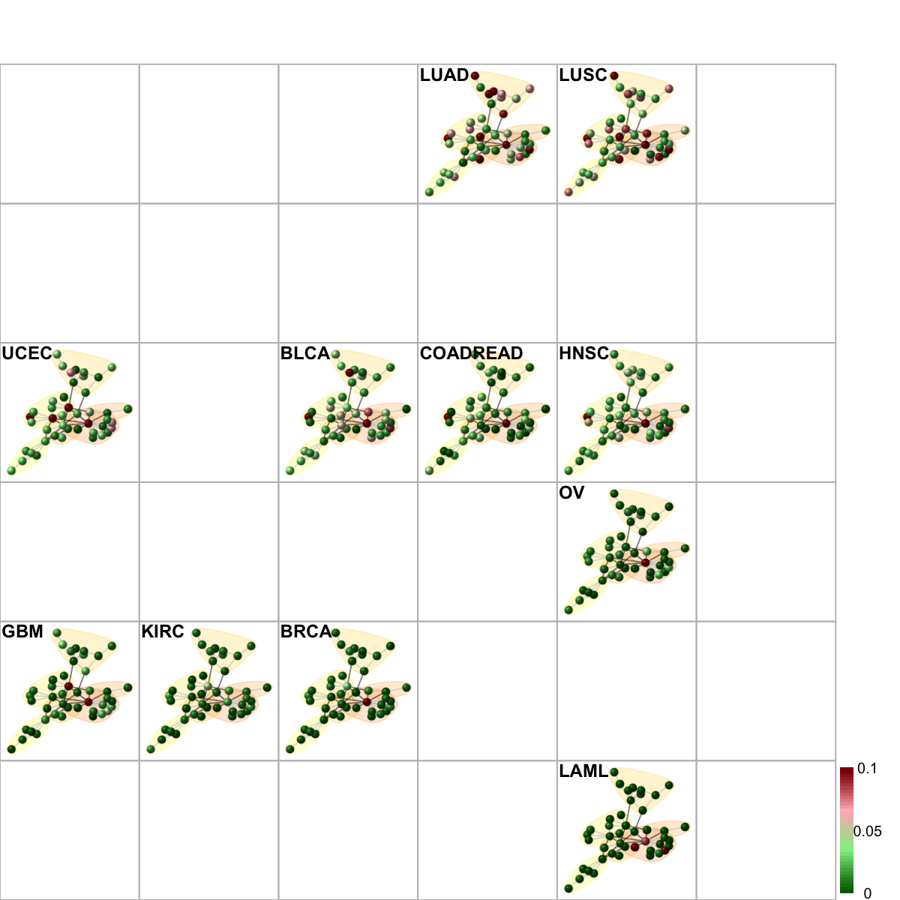
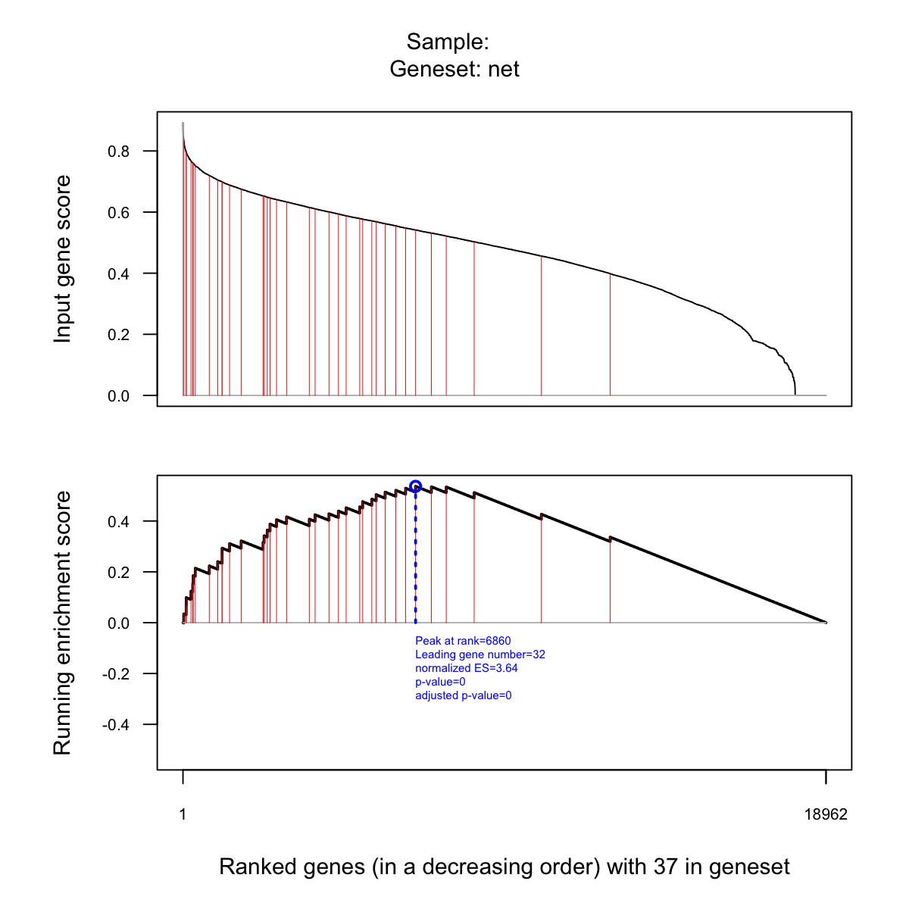
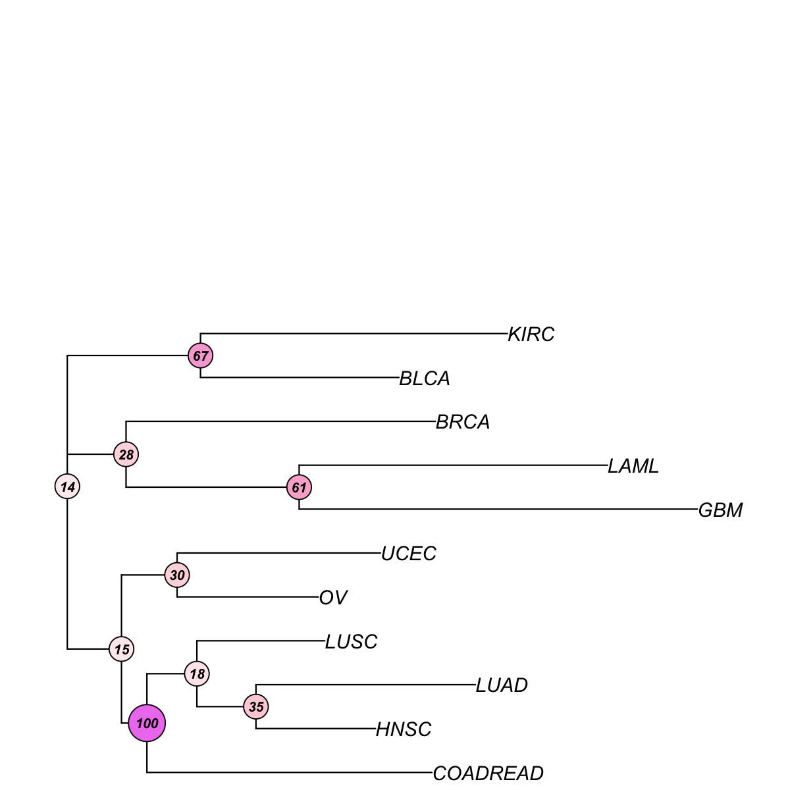
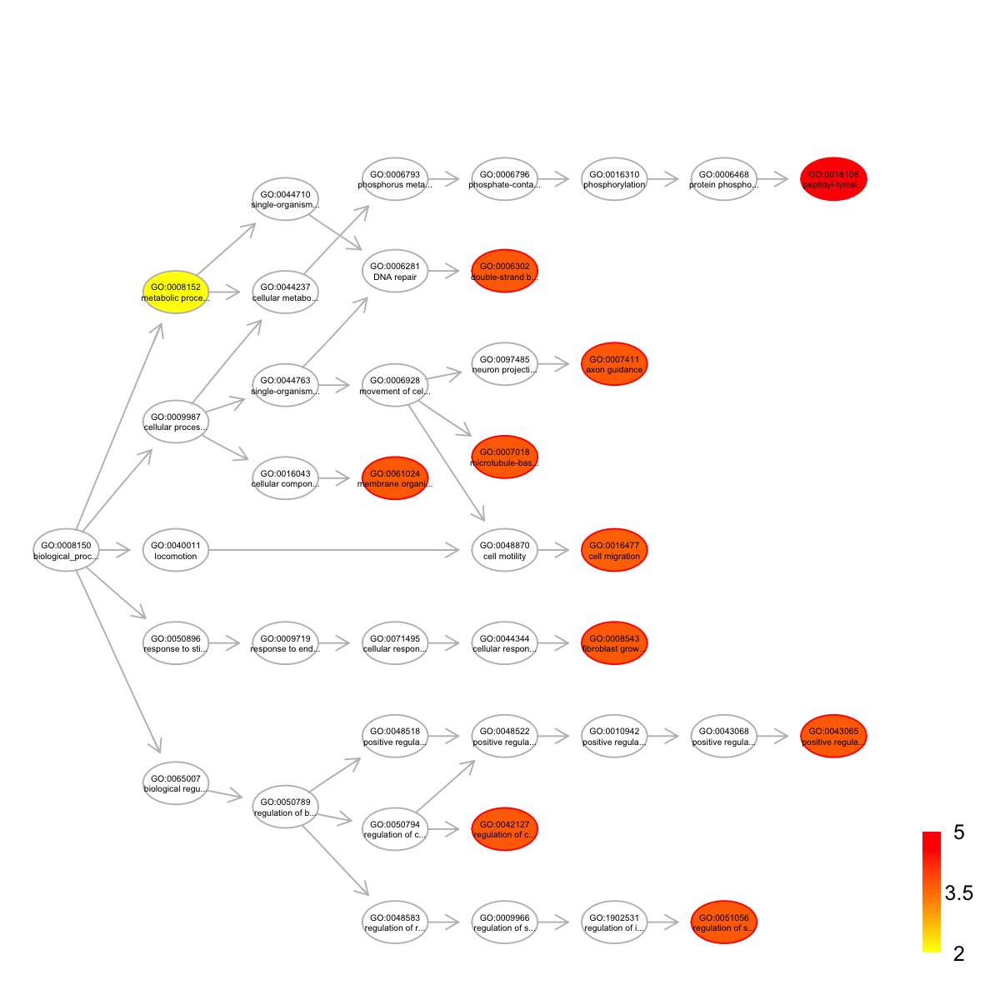
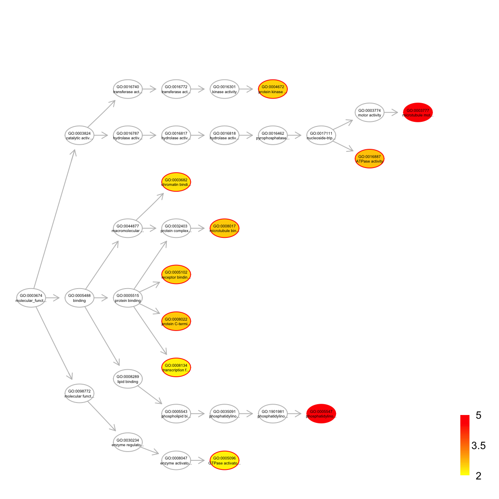
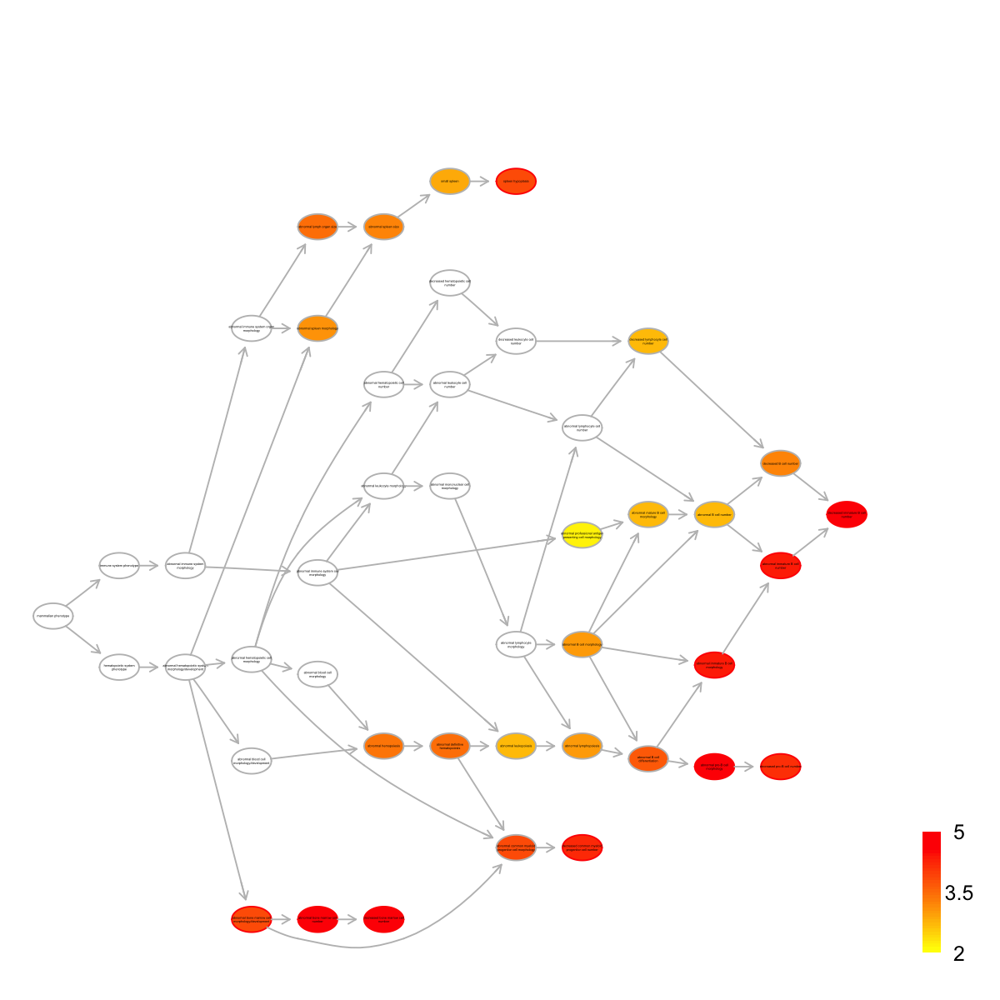
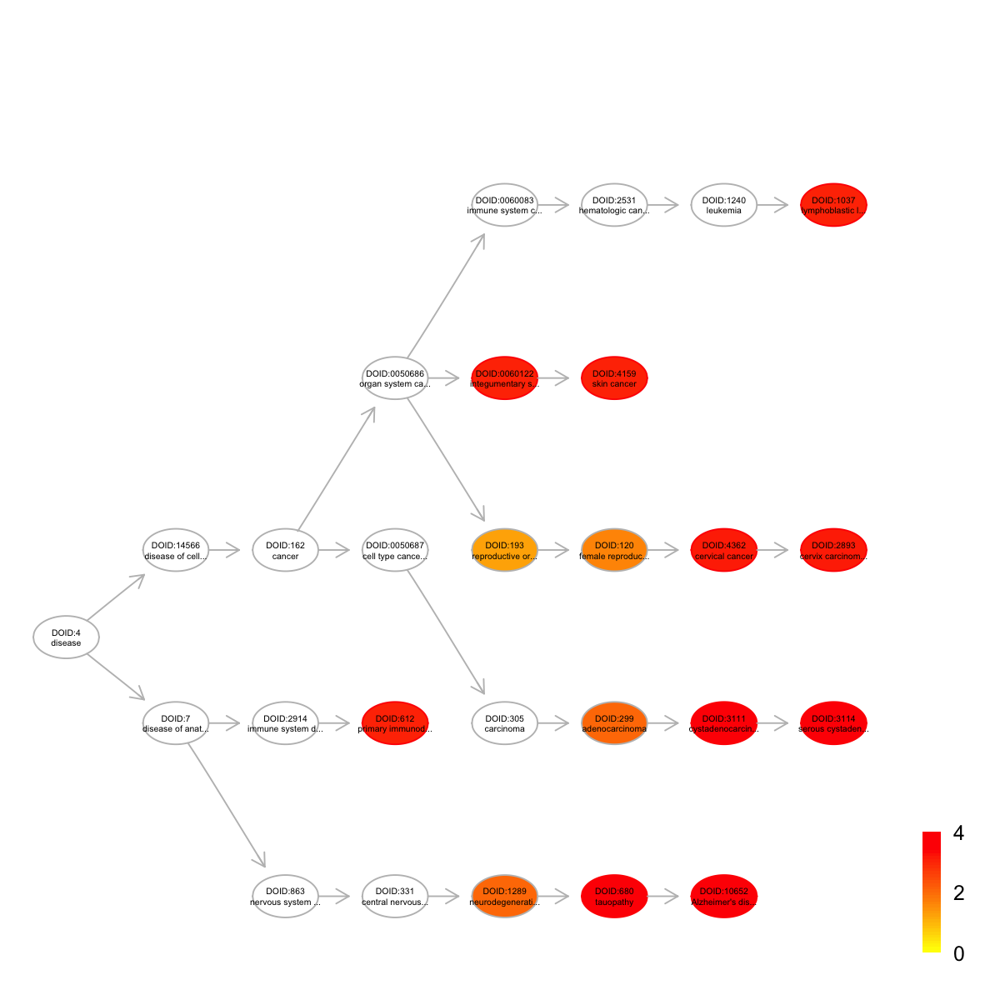

time status Age Gender TCGA_tumor_type Tumor_stage
TCGA-B8-4153-01B-11D-1669-08 404 0 74 male KIRC 3
TCGA-24-1469-01A-01W-0553-09 277 0 71 female OV 3
TCGA-06-5411-01A-01D-1696-08 254 1 51 male GBM NA
Tumor_grade
TCGA-B8-4153-01B-11D-1669-08 3
TCGA-24-1469-01A-01W-0553-09 3
TCGA-06-5411-01A-01D-1696-08 NA
# extract information about feature/gene data
fd <- fData(eset)
fd[1:3,]
EntrezID Symbol Desc
A1BG 1 A1BG alpha-1-B glycoprotein
A1CF 29974 A1CF APOBEC1 complementation factor
A2M 2 A2M alpha-2-macroglobulin
Synonyms
A1BG A1B|ABG|GAB|HYST2477
A1CF ACF|ACF64|ACF65|APOBEC1CF|ASP
A2M A2MD|CPAMD5|FWP007|S863-7
# extract information about mutational data
md <- exprs(eset)
md[1:3,1:3]
TCGA-B8-4153-01B-11D-1669-08 TCGA-24-1469-01A-01W-0553-09
A1BG 0 0
A1CF 0 0
A2M 0 0
TCGA-06-5411-01A-01D-1696-08
A1BG 1
A1CF 0
A2M 0
# number of samples for each cancer type
tumor_type <- sort(unique(pData(eset)$TCGA_tumor_type))
table(pData(eset)$TCGA_tumor_type)
BLCA BRCA COADREAD GBM HNSC KIRC LAML LUAD
92 763 193 275 300 417 185 155
LUSC OV UCEC
171 315 230
'org.Hs.string' (from http://supfam.org/dnet/data/org.Hs.string.RData) has been loaded into the working environment
# restrict to those edges with high confidence (score>=700)
network <- subgraph.edges(org.Hs.string, eids=E(org.Hs.string)[combined_score>=700])
network
IGRAPH UN-- 13865 274803 --
+ attr: name (v/c), seqid (v/c), geneid (v/n), symbol (v/c),
description (v/c), neighborhood_score (e/n), fusion_score (e/n),
cooccurence_score (e/n), coexpression_score (e/n), experimental_score
(e/n), database_score (e/n), textmining_score (e/n), combined_score
(e/n)
IGRAPH UN-- 1631 11541 --
+ attr: name (v/c), seqid (v/c), geneid (v/n), symbol (v/c),
description (v/c), neighborhood_score (e/n), fusion_score (e/n),
cooccurence_score (e/n), coexpression_score (e/n), experimental_score
(e/n), database_score (e/n), textmining_score (e/n), combined_score
(e/n)
Start at 2015-07-13 13:34:33
First, consider the input fdr (or p-value) distribution
Second, determine the significance threshold...
significance threshold: 2.50e-02
Third, calculate the scores according to the input fdr (or p-value) and the threshold (if any)...
Amongst 2837 scores, there are 150 positives.
Finally, find the subgraph from the input graph with 1631 nodes and 11541 edges...
Size of the subgraph: 37 nodes and 46 edges
Finish at 2015-07-13 13:34:35
Runtime in total is: 2 secs
net
IGRAPH UN-- 37 46 --
+ attr: name (v/c), seqid (v/c), geneid (v/n), symbol (v/c),
description (v/c), score (v/n), neighborhood_score (e/n),
fusion_score (e/n), cooccurence_score (e/n), coexpression_score
(e/n), experimental_score (e/n), database_score (e/n),
textmining_score (e/n), combined_score (e/n)

legend_name <- paste("C",1:length(mcolors)," (n=",com$csize,", pval=",signif(com$significance,digits=2),")",sep='')
legend("topleft", legend=legend_name, fill=mcolors, bty="n", cex=0.6)

# fit a Cox proportional hazards model using the subnetwork
## for the whole network
data_g <- t(md[V(net)$name,])
data_g <- apply(data_g!=0, 1, sum)
data <- cbind(pd, net=data_g)
fit <- coxph(formula=Surv(time,status) ~ Age + Gender + TCGA_tumor_type + net, data=data)
res <- as.matrix(anova(fit))
HR_g <- res[5,2]
pvals_g <- res[5,4]
## for the cumulative nodes from the network
cg_names <- names(sort(HR[V(net)$name], decreasing=T))
cg_signif <- matrix(1, nrow=length(cg_names), ncol=2)
rownames(cg_signif) <- cg_names
colnames(cg_signif) <- c("HR", "pvalue")
for(i in 1:length(cg_names)){
data_g <- t(md[cg_names[1:i],])
if(i!=1){
data_g <- apply(data_g!=0, 1, sum)
}else{
data_g <- as.vector(data_g!=0)
}
data <- cbind(pd, cnet=data_g)
fit <- coxph(formula=Surv(time,status) ~ Age + Gender + TCGA_tumor_type + cnet, data=data)
res <- as.matrix(anova(fit))
cg_signif[i,] <- res[5,c(2,4)]
}
cg_signif[cg_signif[,2]==0,2] <- min(cg_signif[cg_signif[,2]!=0,2])
naive <- sample(HR, length(cg_names))
bp.HR.list <- list(All=naive, Neti=HR[cg_names], Netc=cg_signif[2:nrow(cg_signif),1])
par(las=2, mar=c(10,8,4,2)) # all axis labels horizontal
boxplot(bp.HR.list, outline=F, horizontal=F, names=c("naive\n(genes in random)", "dnet\n(genes individually)", "dnet \n(genes in combination)"), col=c("red","green","blue"), ylab="Cox hazard ratio (HR)", log="y", ylim=c(0.1,100))

# Two-sample Kolmogorov-Smirnov test
## Genes randomly choosen versus genes in the network (used individually)
stats::ks.test(x=naive, y=HR[cg_names], alternative="two.sided", exact=NULL)
Two-sample Kolmogorov-Smirnov test
data: naive and HR[cg_names]
D = 0.83784, p-value = 2.125e-13
alternative hypothesis: two-sided
## Genes in the network (used individually) versuse genes in the network (used in combination)
stats::ks.test(x=HR[cg_names], y=cg_signif[2:nrow(cg_signif),1], alternative="two.sided", exact=NULL)
Two-sample Kolmogorov-Smirnov test
data: HR[cg_names] and cg_signif[2:nrow(cg_signif), 1]
D = 1, p-value < 2.2e-16
alternative hypothesis: two-sided
Start at 2015-07-13 13:34:43
First, define topology of a map grid (2015-07-13 13:34:43)...
Second, initialise the codebook matrix (36 X 46) using 'linear' initialisation, given a topology and input data (2015-07-13 13:34:43)...
Third, get training at the rough stage (2015-07-13 13:34:43)...
1 out of 363 (2015-07-13 13:34:43)
37 out of 363 (2015-07-13 13:34:43)
74 out of 363 (2015-07-13 13:34:43)
111 out of 363 (2015-07-13 13:34:43)
148 out of 363 (2015-07-13 13:34:43)
185 out of 363 (2015-07-13 13:34:43)
222 out of 363 (2015-07-13 13:34:43)
259 out of 363 (2015-07-13 13:34:43)
296 out of 363 (2015-07-13 13:34:43)
333 out of 363 (2015-07-13 13:34:43)
363 out of 363 (2015-07-13 13:34:43)
Fourth, get training at the finetune stage (2015-07-13 13:34:43)...
1 out of 1441 (2015-07-13 13:34:43)
145 out of 1441 (2015-07-13 13:34:43)
290 out of 1441 (2015-07-13 13:34:44)
435 out of 1441 (2015-07-13 13:34:44)
580 out of 1441 (2015-07-13 13:34:44)
725 out of 1441 (2015-07-13 13:34:44)
870 out of 1441 (2015-07-13 13:34:44)
1015 out of 1441 (2015-07-13 13:34:44)
1160 out of 1441 (2015-07-13 13:34:44)
1305 out of 1441 (2015-07-13 13:34:44)
1441 out of 1441 (2015-07-13 13:34:44)
Next, identify the best-matching hexagon/rectangle for the input data (2015-07-13 13:34:44)...
Finally, append the response data (hits and mqe) into the sMap object (2015-07-13 13:34:44)...
Below are the summaries of the training results:
dimension of input data: 11x46
xy-dimension of map grid: xdim=6, ydim=6
grid lattice: rect
grid shape: sheet
dimension of grid coord: 36x2
initialisation method: linear
dimension of codebook matrix: 36x46
mean quantization error: 0.00290529109623643
Below are the details of trainology:
training algorithm: sequential
alpha type: invert
training neighborhood kernel: gaussian
trainlength (x input data length): 33 at rough stage; 131 at finetune stage
radius (at rough stage): from 1 to 1
radius (at finetune stage): from 1 to 1
End at 2015-07-13 13:34:44
Runtime in total is: 1 secs

write.table(sif, file=paste("Survival_TCGA.sif", sep=""), quote=F, row.names=F,col.names=F,sep="\t")
## Output the corresponding mutation frequency data
hmap <- data.frame(Symbol=rownames(data), data)
write.table(hmap, file=paste("Survival_TCGA.txt", sep=""), quote=F, row.names=F,col.names=T,sep="\t")
# define the "mutation ubiquity" of genes in terms of a vector which stores the fraction of samples (within a tumor type) having the mutated gene
# sparseness for a vector is: 1) one if the vector contains only a single non-zero value; 2) zero if and only if all elements are equal; 3) otherwise, the value interpolates smoothly between the two extremes
sparseness <- sapply(1:nrow(frac_mutated), function(i){
v <- frac_mutated[i,]
n <- length(v)
norm1 <- sum(abs(v))
norm2 <- sqrt(sum(v^2))
(sqrt(n)-norm1/norm2) / (sqrt(n)-1)
})
sparseness <- matrix(sparseness, ncol=1)
rownames(sparseness) <- rownames(frac_mutated)
# derive the "mutation ubiquity" of genes: mutational fraction with the same type, and fraction consistent across different types
ubiquity <- 1- sparseness
dev.new()
hist(ubiquity,20, xlab="Cross-tumor mutation ubiquity", xlim=c(0,1))

Start at 2015-07-13 13:35:18
First, load the ontology Customised and its gene associations in the genome Hs (2015-07-13 13:35:18) ...
'org.Hs.eg' (from http://supfam.org/dnet/data/org.Hs.eg.RData) has been loaded into the working environment
Among 37 symbols of input data, there are 37 mappable via official gene symbols but 0 left unmappable
Then, do mapping based on symbol (2015-07-13 13:35:30) ...
Among 19171 symbols of input data, there are 18962 mappable via official gene symbols but 209 left unmappable
Third, perform GSEA analysis (2015-07-13 13:35:32) ...
Sample 1 is being processed at (2015-07-13 13:35:32) ...
1 of 1 gene sets have been processed
Sample 2 is being processed at (2015-07-13 13:35:35) ...
1 of 1 gene sets have been processed
Sample 3 is being processed at (2015-07-13 13:35:37) ...
1 of 1 gene sets have been processed
Sample 4 is being processed at (2015-07-13 13:35:40) ...
1 of 1 gene sets have been processed
Sample 5 is being processed at (2015-07-13 13:35:43) ...
1 of 1 gene sets have been processed
Sample 6 is being processed at (2015-07-13 13:35:45) ...
1 of 1 gene sets have been processed
Sample 7 is being processed at (2015-07-13 13:35:48) ...
1 of 1 gene sets have been processed
Sample 8 is being processed at (2015-07-13 13:35:51) ...
1 of 1 gene sets have been processed
Sample 9 is being processed at (2015-07-13 13:35:53) ...
1 of 1 gene sets have been processed
Sample 10 is being processed at (2015-07-13 13:35:56) ...
1 of 1 gene sets have been processed
Sample 11 is being processed at (2015-07-13 13:35:59) ...
1 of 1 gene sets have been processed
Sample 12 is being processed at (2015-07-13 13:36:01) ...
1 of 1 gene sets have been processed
End at 2015-07-13 13:36:04
Runtime in total is: 46 secs
## Comparing normalised enrichement score (NES)
frac_pvalue <- as.vector(eTerm$pvalue)
frac_fdr <- stats::p.adjust(frac_pvalue, method="BH")
frac_nes <- as.vector(eTerm$nes)
frac_es <- as.vector(eTerm$es)
df <- cbind(frac_es, frac_nes, frac_pvalue, frac_fdr)
rownames(df) <- colnames(eTerm$es)
rownames(df)[nrow(df)] <- "Mutation\nubiquity"
ind <- sort.int(frac_es, index.return=T)$ix
data <- df[ind,]
par(las=1) # make label text perpendicular to axis
par(mar=c(5,8,4,2)) # increase y-axis margin.
z <- data[,2]
barY <- barplot(z, xlab="Normalised enrichment score (NES)", horiz=TRUE, names.arg=rownames(data), cex.names=0.7, cex.lab=0.7, cex.axis=0.7, col="transparent")
Start at 2015-07-13 13:36:06
First, load the ontology PS2 and its gene associations in the genome Hs (2015-07-13 13:36:06) ...
'org.Hs.eg' (from http://supfam.org/dnet/data/org.Hs.eg.RData) has been loaded into the working environment
'org.Hs.egPS' (from http://supfam.org/dnet/data/org.Hs.egPS.RData) has been loaded into the working environment
Then, do mapping based on symbol (2015-07-13 13:36:19) ...
Among 37 symbols of input data, there are 37 mappable via official gene symbols but 0 left unmappable
Third, perform enrichment analysis using HypergeoTest (2015-07-13 13:36:19) ...
There are 19 terms being used, each restricted within [10,20000] annotations
Last, adjust the p-values using the BH method (2015-07-13 13:36:19) ...
End at 2015-07-13 13:36:19
Runtime in total is: 13 secs

setID nAnno nOverlap zscore pvalue adjp name
3 3 7067 8 -3.4100 1.00000 1.000 2759:Eukaryota
8 8 3263 10 0.6290 0.20000 0.320 33154:Opisthokonta
11 11 615 5 2.7800 0.00450 0.042 33208:Metazoa
13 13 485 1 -0.2270 0.36000 0.400 6072:Eumetazoa
15 15 408 1 -0.0506 0.28000 0.340 33213:Bilateria
17 17 672 4 1.7700 0.02800 0.088 33511:Deuterostomia
18 18 75 2 4.1300 0.00093 0.018 7711:Chordata
19 19 96 0 -0.5000 0.22000 0.320 7742:Vertebrata
20 20 568 1 -0.3910 0.43000 0.460 117571:Euteleostomi
21 21 106 0 -0.5250 0.24000 0.330 8287:Sarcopterygii
22 22 123 0 -0.5660 0.27000 0.340 32523:Tetrapoda
23 23 206 2 2.0300 0.01600 0.065 32524:Amniota
24 24 13 0 -0.1830 0.03300 0.090 40674:Mammalia
25 25 75 1 1.8400 0.01600 0.065 32525:Theria
26 26 53 0 -0.3710 0.13000 0.220 9347:Eutheria
27 27 78 1 1.7900 0.01700 0.065 1437010:Boreoeutheria
30 30 23 0 -0.2440 0.05800 0.120 9443:Primates
36 36 15 0 -0.1970 0.03800 0.090 207598:Homininae
37 37 34 0 -0.2970 0.08400 0.160 9606:Homo sapiens
namespace distance
3 superkingdom 0
8 no rank 0.03880849
11 kingdom 0.09260898
13 no rank 0.1117612
15 no rank 0.126603
17 no rank 0.1485278
18 phylum 0.1575984
19 no rank 0.1695313
20 no rank 0.1829545
21 no rank 0.1855467
22 no rank 0.188559
23 no rank 0.1924103
24 class 0.1955288
25 no rank 0.1991713
26 no rank 0.2026269
27 no rank 0.2040922
30 order 0.2070882
36 subfamily 0.223133
37 species 0.2334046
members
3 ABCA1,AKT1,DYNC1I1,DNMT1,IDH1,PPP2R1A,SIN3A,PAK7
8 BRCA2,CACNA1E,DNAH9,DYNC1H1,DNM2,FAM13A,DNAH10,CCDC88A,RAD50,SMC1B
11 ABL1,BTK,ANKLE2,KAT6A,TNRC6C
13 TJP1
15 DSC2
17 EPHA1,EPHA3,VAV1,TP53
18 EPHB1,ITGAM
19
20 ARHGEF11
21
22
23 ARAP2,AGRN
24
25 UTRN
26
27 HSPG2
30
36
37
'org.Hs.eg' (from http://supfam.org/dnet/data/org.Hs.eg.RData) has been loaded into the working environment
gene_info <- org.Hs.eg$gene_info
entrez <- unlist(eTerm$overlap[6], use.names=F)
## build neighbor-joining tree
data <- frac_mutated[V(net)$name,]
tree_bs <- visTreeBootstrap(t(data), nodelabels.arg=list(cex=0.7,bg="white-pink-violet"), metric=c("euclidean","pearson","spearman","cos","manhattan","kendall","mi")[3], num.bootstrap=2000, plot.phylo.arg=list(cex=1, edge.width=1.2))
Start at 2015-07-13 13:36:33
First, build the tree (using nj algorithm and spearman distance) from input matrix (11 by 37)...
Second, perform bootstrap analysis with 2000 replicates...
Finally, visualise the bootstrapped tree...
Finish at 2015-07-13 13:36:35
Runtime in total is: 2 secs

flag <- match(tree_bs$tip.label, colnames(data))
base <- sapply(eTerm$overlap, function(x){
as.character(gene_info[match(x,rownames(gene_info)),2])
})
## reordering via hierarchical clustering
if(1){
cluster_order <- matrix(1, nrow=length(base))
base_order <- matrix(1, nrow=length(base))
for(i in 1:length(base)){
tmp <- base[[i]]
ind <- match(tmp, rownames(data))
if(length(ind)>0){
base_order[ind] <- i
tmpD <- data[ind,]
if(length(tmp) != 1){
distance <- as.dist(sDistance(tmpD, metric="pearson"))
cluster <- hclust(distance, method="average")
cluster_order[ind] <- cluster$order
}else if(length(tmp) == 1){
cluster_order[ind] <- 1
}
}
}
## contruct data frame including 1st column for temporary index, 2nd for cluster order, 3rd for base/cluster ID
df <- data.frame(ind=1:nrow(data), cluster_order, base_order)
# order by: first base, then hexagon
ordering <- df[order(base_order,cluster_order),]$ind
}
RowSideColors <- sapply(1:length(base), function(x) base_order==x)
RowSideColors <- t(RowSideColors)
rslab <- ifelse(eTerm$adjp<0.05," (FDR<0.05)","")
rslab <- paste(gsub(".*:","",eTerm$set_info$name), rslab, sep="")
rownames(RowSideColors) <- rslab
colnames(RowSideColors) <- rownames(data)
RowSideColors <- ifelse(RowSideColors==T, "gray","white")
RowSideColors <- RowSideColors[, ordering]
base_order1 <- base_order[ordering]
basesep_index <- sapply(unique(base_order1), function(x) which(base_order1[length(base_order1):1]==x)[1])
basesep_index <- basesep_index[1:length(basesep_index)-1]
labRow <- sapply(pvals[match(V(net)$name, names(pvals))], function(x){
if(x < 0.005){
" ***"
}else if(x < 0.01){
" **"
}else if(x<0.05){
" *"
}else{
""
}
})
labRow <- paste(rownames(data), labRow, sep="")
visHeatmapAdv(data=data[ordering,flag], Rowv=F, Colv=F, colormap="lightyellow-orange", zlim=c(0,0.12), keysize=1.5, RowSideColors=RowSideColors, RowSideWidth=2, RowSideLabelLocation="top", add.expr=abline(h=(basesep_index-0.5), lty=2,lwd=1,col="black"), offsetRow=-0.5, labRow=labRow[ordering], KeyValueName="Frequency", margins=c(6,6))
 Warning message:
data length is not a multiple of split variable
Error: length(pie.out) == n.obs is not TRUE
Warning message:
data length is not a multiple of split variable
Error: length(pie.out) == n.obs is not TRUE
## Deuterostomia versus all ancestors
stats::ks.test(x=net_ubiquity[base_order1==6], y=net_ubiquity, alternative="two.sided", exact=NULL)
Warning message:
cannot compute exact p-value with ties
Two-sample Kolmogorov-Smirnov test
data: net_ubiquity[base_order1 == 6] and net_ubiquity
D = 0.61486, p-value = 0.1305
alternative hypothesis: two-sided
## Deuterostomia versus ancestors before Deuterostomia
stats::ks.test(x=net_ubiquity[base_order1==6], y=net_ubiquity[base_order1<6], alternative="two.sided", exact=NULL)
Two-sample Kolmogorov-Smirnov test
data: net_ubiquity[base_order1 == 6] and net_ubiquity[base_order1 < 6]
D = 0.71, p-value = 0.03385
alternative hypothesis: two-sided
## Deuterostomia versus ancestors after Deuterostomia
stats::ks.test(x=net_ubiquity[base_order1==6], y=net_ubiquity[base_order1>6], alternative="two.sided", exact=NULL)
Two-sample Kolmogorov-Smirnov test
data: net_ubiquity[base_order1 == 6] and net_ubiquity[base_order1 > 6]
D = 0.60714, p-value = 0.2121
alternative hypothesis: two-sided
Start at 2015-07-13 13:36:36
First, load the ontology GOBP and its gene associations in the genome Hs (2015-07-13 13:36:36) ...
'org.Hs.eg' (from http://supfam.org/dnet/data/org.Hs.eg.RData) has been loaded into the working environment
'org.Hs.egGOBP' (from http://supfam.org/dnet/data/org.Hs.egGOBP.RData) has been loaded into the working environment
Then, do mapping based on symbol (2015-07-13 13:36:59) ...
Among 37 symbols of input data, there are 37 mappable via official gene symbols but 0 left unmappable
Third, perform enrichment analysis using HypergeoTest (2015-07-13 13:36:59) ...
There are 2251 terms being used, each restricted within [10,1000] annotations
Last, adjust the p-values using the BH method (2015-07-13 13:37:00) ...
End at 2015-07-13 13:37:00
Runtime in total is: 24 secs
'ig.GOBP' (from http://supfam.org/dnet/data/ig.GOBP.RData) has been loaded into the working environment
setID nAnno nOverlap zscore pvalue adjp
GO:0018108 GO:0018108 120 5 8.89 3.5e-07 1.6e-05
GO:0006302 GO:0006302 66 3 7.21 1.7e-05 2.0e-04
GO:0007018 GO:0007018 65 3 7.27 1.6e-05 2.0e-04
GO:0051056 GO:0051056 122 4 6.94 9.6e-06 2.0e-04
GO:0007411 GO:0007411 379 6 5.45 2.6e-05 2.2e-04
GO:0008543 GO:0008543 165 4 5.81 4.1e-05 2.2e-04
GO:0042127 GO:0042127 153 4 6.08 2.9e-05 2.2e-04
GO:0043065 GO:0043065 277 5 5.41 4.3e-05 2.2e-04
GO:0061024 GO:0061024 159 4 5.94 3.5e-05 2.2e-04
GO:0016477 GO:0016477 172 4 5.66 5.0e-05 2.3e-04
name namespace
GO:0018108 peptidyl-tyrosine phosphorylation Process
GO:0006302 double-strand break repair Process
GO:0007018 microtubule-based movement Process
GO:0051056 regulation of small GTPase mediated signal transduction Process
GO:0007411 axon guidance Process
GO:0008543 fibroblast growth factor receptor signaling pathway Process
GO:0042127 regulation of cell proliferation Process
GO:0043065 positive regulation of apoptotic process Process
GO:0061024 membrane organization Process
GO:0016477 cell migration Process
distance members
GO:0018108 9 EPHA1,EPHB1,ABL1,BTK,EPHA3
GO:0006302 9 TP53,RAD50,BRCA2
GO:0007018 5 DYNC1H1,DNAH9,DNAH10
GO:0051056 8 ARHGEF11,VAV1,FAM13A,ARAP2
GO:0007411 14 ARHGEF11,AGRN,EPHA1,EPHB1,ABL1,EPHA3
GO:0008543 8 AKT1,PPP2R1A,TNRC6C,VAV1
GO:0042127 5 DNMT1,CCDC88A,ABL1,BTK
GO:0043065 8 TP53,DNM2,ARHGEF11,ABL1,VAV1
GO:0061024 4 AKT1,DNM2,CCDC88A,TJP1
GO:0016477 6 CCDC88A,ABL1,PAK7,EPHA3
Start at 2015-07-13 13:37:14
First, load the ontology GOMF and its gene associations in the genome Hs (2015-07-13 13:37:14) ...
'org.Hs.eg' (from http://supfam.org/dnet/data/org.Hs.eg.RData) has been loaded into the working environment
'org.Hs.egGOMF' (from http://supfam.org/dnet/data/org.Hs.egGOMF.RData) has been loaded into the working environment
Then, do mapping based on symbol (2015-07-13 13:37:30) ...
Among 37 symbols of input data, there are 37 mappable via official gene symbols but 0 left unmappable
Third, perform enrichment analysis using HypergeoTest (2015-07-13 13:37:30) ...
There are 633 terms being used, each restricted within [10,1000] annotations
Last, adjust the p-values using the BH method (2015-07-13 13:37:31) ...
End at 2015-07-13 13:37:31
Runtime in total is: 17 secs

'ig.GOMF' (from http://supfam.org/dnet/data/ig.GOMF.RData) has been loaded into the working environment
setID nAnno nOverlap zscore pvalue adjp
GO:0003777 GO:0003777 68 4 9.27 7.0e-07 0.00001
GO:0005547 GO:0005547 33 3 10.10 1.3e-06 0.00001
GO:0016887 GO:0016887 145 3 4.38 4.6e-04 0.00250
GO:0008017 GO:0008017 174 3 3.89 9.2e-04 0.00290
GO:0008022 GO:0008022 172 3 3.92 8.8e-04 0.00290
GO:0004672 GO:0004672 192 3 3.64 1.3e-03 0.00300
GO:0005102 GO:0005102 321 4 3.59 1.2e-03 0.00300
GO:0003682 GO:0003682 382 4 3.14 2.5e-03 0.00500
GO:0005096 GO:0005096 251 3 3.00 3.5e-03 0.00620
GO:0008134 GO:0008134 266 3 2.87 4.3e-03 0.00690
name namespace distance
GO:0003777 microtubule motor activity Function 9
GO:0005547 phosphatidylinositol-3,4,5-trisphosphate binding Function 8
GO:0016887 ATPase activity Function 8
GO:0008017 microtubule binding Function 5
GO:0008022 protein C-terminus binding Function 4
GO:0004672 protein kinase activity Function 6
GO:0005102 receptor binding Function 4
GO:0003682 chromatin binding Function 4
GO:0005096 GTPase activator activity Function 5
GO:0008134 transcription factor binding Function 4
members
GO:0003777 DNAH9,DYNC1I1,DYNC1H1,DNAH10
GO:0005547 AKT1,BTK,ARAP2
GO:0016887 DNAH9,DYNC1H1,DNAH10
GO:0008017 DYNC1I1,CCDC88A,DNM2
GO:0008022 ABL1,TJP1,HSPG2
GO:0004672 ABL1,AKT1,EPHA1
GO:0005102 ABL1,IDH1,BTK,ABCA1
GO:0003682 SIN3A,TP53,DNMT1,KAT6A
GO:0005096 ARHGEF11,FAM13A,ARAP2
GO:0008134 TP53,DNMT1,KAT6A
Start at 2015-07-13 13:37:41
First, load the ontology MP and its gene associations in the genome Hs (2015-07-13 13:37:41) ...
'org.Hs.eg' (from http://supfam.org/dnet/data/org.Hs.eg.RData) has been loaded into the working environment
'org.Hs.egMP' (from http://supfam.org/dnet/data/org.Hs.egMP.RData) has been loaded into the working environment
Then, do mapping based on symbol (2015-07-13 13:38:03) ...
Among 37 symbols of input data, there are 37 mappable via official gene symbols but 0 left unmappable
Third, perform enrichment analysis using HypergeoTest (2015-07-13 13:38:04) ...
There are 4731 terms being used, each restricted within [10,1000] annotations
Last, adjust the p-values using the BH method (2015-07-13 13:38:06) ...
End at 2015-07-13 13:38:06
Runtime in total is: 25 secs

'ig.MP' (from http://supfam.org/dnet/data/ig.MP.RData) has been loaded into the working environment
setID nAnno nOverlap zscore pvalue adjp
MP:0005432 MP:0005432 102 6 9.29 5.7e-08 1.4e-05
MP:0008215 MP:0008215 117 6 8.60 1.5e-07 1.9e-05
MP:0000172 MP:0000172 194 7 7.58 3.0e-07 2.5e-05
MP:0000333 MP:0000333 137 6 7.85 4.4e-07 2.7e-05
MP:0013664 MP:0013664 150 6 7.44 8.1e-07 4.1e-05
MP:0005022 MP:0005022 156 6 7.27 1.1e-06 4.4e-05
MP:0008813 MP:0008813 57 4 8.35 1.7e-06 5.9e-05
MP:0008208 MP:0008208 61 4 8.04 2.3e-06 7.3e-05
MP:0000694 MP:0000694 133 5 6.54 6.8e-06 1.5e-04
MP:0002398 MP:0002398 508 9 5.43 6.7e-06 1.5e-04
name namespace
MP:0005432 abnormal pro-B cell morphology Mammalian_phenotype
MP:0008215 decreased immature B cell number Mammalian_phenotype
MP:0000172 abnormal bone marrow cell number Mammalian_phenotype
MP:0000333 decreased bone marrow cell number Mammalian_phenotype
MP:0013664 abnormal immature B cell number Mammalian_phenotype
MP:0005022 abnormal immature B cell morphology Mammalian_phenotype
MP:0008813 decreased common myeloid progenitor cell number Mammalian_phenotype
MP:0008208 decreased pro-B cell number Mammalian_phenotype
MP:0000694 spleen hypoplasia Mammalian_phenotype
MP:0002398 abnormal bone marrow cell morphology/development Mammalian_phenotype
distance members
MP:0005432 10 TP53,KAT6A,RAD50,ABL1,BTK,DNMT1
MP:0008215 11 TP53,KAT6A,RAD50,ABL1,BTK,VAV1
MP:0000172 4 TP53,KAT6A,BRCA2,IDH1,RAD50,ABL1,BTK
MP:0000333 5 TP53,KAT6A,BRCA2,IDH1,RAD50,ABL1
MP:0013664 10 TP53,KAT6A,RAD50,ABL1,BTK,VAV1
MP:0005022 8 TP53,KAT6A,RAD50,ABL1,BTK,VAV1
MP:0008813 8 TP53,KAT6A,BRCA2,IDH1
MP:0008208 11 KAT6A,RAD50,ABL1,DNMT1
MP:0000694 7 TP53,KAT6A,BRCA2,ABL1,BTK
MP:0002398 3 TP53,KAT6A,BRCA2,IDH1,RAD50,ABL1,BTK,ABCA1,ITGAM
Start at 2015-07-13 13:38:20
First, load the ontology DO and its gene associations in the genome Hs (2015-07-13 13:38:20) ...
'org.Hs.eg' (from http://supfam.org/dnet/data/org.Hs.eg.RData) has been loaded into the working environment
'org.Hs.egDO' (from http://supfam.org/dnet/data/org.Hs.egDO.RData) has been loaded into the working environment
Then, do mapping based on symbol (2015-07-13 13:38:42) ...
Among 37 symbols of input data, there are 37 mappable via official gene symbols but 0 left unmappable
Third, perform enrichment analysis using HypergeoTest (2015-07-13 13:38:42) ...
There are 917 terms being used, each restricted within [10,1000] annotations
Last, adjust the p-values using the BH method (2015-07-13 13:38:42) ...
End at 2015-07-13 13:38:42
Runtime in total is: 22 secs

'ig.DO' (from http://supfam.org/dnet/data/ig.DO.RData) has been loaded into the working environment
setID nAnno nOverlap zscore pvalue adjp
DOID:10652 DOID:10652 397 8 5.58 6.4e-06 0.00024
DOID:3111 DOID:3111 36 3 7.91 7.8e-06 0.00024
DOID:3114 DOID:3114 36 3 7.91 7.8e-06 0.00024
DOID:680 DOID:680 400 8 5.55 6.8e-06 0.00024
DOID:2893 DOID:2893 51 3 6.53 3.2e-05 0.00069
DOID:4362 DOID:4362 52 3 6.46 3.4e-05 0.00069
DOID:0060122 DOID:0060122 125 4 5.28 7.7e-05 0.00093
DOID:1037 DOID:1037 413 7 4.59 7.5e-05 0.00093
DOID:4159 DOID:4159 125 4 5.28 7.7e-05 0.00093
DOID:612 DOID:612 199 5 5.07 6.5e-05 0.00093
name namespace distance
DOID:10652 Alzheimer's disease Disease_Ontology 6
DOID:3111 cystadenocarcinoma Disease_Ontology 6
DOID:3114 serous cystadenocarcinoma Disease_Ontology 7
DOID:680 tauopathy Disease_Ontology 5
DOID:2893 cervix carcinoma Disease_Ontology 7
DOID:4362 cervical cancer Disease_Ontology 6
DOID:0060122 integumentary system cancer Disease_Ontology 4
DOID:1037 lymphoblastic leukemia Disease_Ontology 7
DOID:4159 skin cancer Disease_Ontology 5
DOID:612 primary immunodeficiency disease Disease_Ontology 3
members
DOID:10652 TP53,ABCA1,AKT1,ITGAM,ABL1,HSPG2,DNM2,AGRN
DOID:3111 TP53,BRCA2,PPP2R1A
DOID:3114 TP53,BRCA2,PPP2R1A
DOID:680 TP53,ABCA1,AKT1,ITGAM,ABL1,HSPG2,DNM2,AGRN
DOID:2893 TP53,AKT1,DNM2
DOID:4362 TP53,AKT1,DNM2
DOID:0060122 TP53,AKT1,BRCA2,EPHA1
DOID:1037 TP53,AKT1,ITGAM,ABL1,DNMT1,EPHA3,BTK
DOID:4159 TP53,AKT1,BRCA2,EPHA1
DOID:612 TP53,ABL1,BTK,VAV1,PPP2R1A
Start at 2015-07-13 13:38:50
First, load the ontology MsigdbC2CP and its gene associations in the genome Hs (2015-07-13 13:38:50) ...
'org.Hs.eg' (from http://supfam.org/dnet/data/org.Hs.eg.RData) has been loaded into the working environment
'org.Hs.egMsigdbC2CP' (from http://supfam.org/dnet/data/org.Hs.egMsigdbC2CP.RData) has been loaded into the working environment
Then, do mapping based on symbol (2015-07-13 13:39:07) ...
Among 37 symbols of input data, there are 37 mappable via official gene symbols but 0 left unmappable
Third, perform enrichment analysis using HypergeoTest (2015-07-13 13:39:07) ...
There are 245 terms being used, each restricted within [10,1000] annotations
Last, adjust the p-values using the BH method (2015-07-13 13:39:07) ...
End at 2015-07-13 13:39:07
Runtime in total is: 17 secs

setID nAnno nOverlap zscore pvalue adjp
M5193 M5193 45 4 6.64 1.1e-05 9.7e-05
M105 M105 68 4 5.19 8.3e-05 2.8e-04
M1315 M1315 36 3 5.53 9.3e-05 2.8e-04
M3501 M3501 40 3 5.20 1.4e-04 3.2e-04
M8626 M8626 46 3 4.78 2.4e-04 4.4e-04
M261 M261 59 3 4.08 6.4e-04 9.6e-04
M7 M7 62 3 3.95 7.8e-04 1.0e-03
M3270 M3270 82 3 3.26 2.2e-03 2.5e-03
M186 M186 129 3 2.26 1.1e-02 1.1e-02
name namespace
M5193 SIG_CHEMOTAXIS C2
M105 PID_TELOMERASE_PATHWAY C2
M1315 SIG_PIP3_SIGNALING_IN_B_LYMPHOCYTES C2
M3501 ST_B_CELL_ANTIGEN_RECEPTOR C2
M8626 SIG_BCR_SIGNALING_PATHWAY C2
M261 PID_P53_REGULATION_PATHWAY C2
M7 PID_FCER1_PATHWAY C2
M3270 ST_INTEGRIN_SIGNALING_PATHWAY C2
M186 PID_PDGFRB_PATHWAY C2
distance members
M5193 Genes related to chemotaxis AKT1,BTK,ARHGEF11,PAK7
M105 Regulation of Telomerase RAD50,AKT1,SIN3A,ABL1
M1315 Genes related to PIP3 signaling in B lymphocytes AKT1,BTK,VAV1
M3501 B Cell Antigen Receptor AKT1,BTK,VAV1
M8626 Members of the BCR signaling pathway AKT1,BTK,VAV1
M261 p53 pathway AKT1,ABL1,TP53
M7 Fc-epsilon receptor I signaling in mast cells AKT1,BTK,VAV1
M3270 Integrin Signaling Pathway AKT1,ABL1,PAK7
M186 PDGFR-beta signaling pathway ABL1,PPP2R1A,DNM2
Start at 2015-07-13 13:39:07
First, load the ontology MsigdbC2KEGG and its gene associations in the genome Hs (2015-07-13 13:39:07) ...
'org.Hs.eg' (from http://supfam.org/dnet/data/org.Hs.eg.RData) has been loaded into the working environment
'org.Hs.egMsigdbC2KEGG' (from http://supfam.org/dnet/data/org.Hs.egMsigdbC2KEGG.RData) has been loaded into the working environment
Then, do mapping based on symbol (2015-07-13 13:39:26) ...
Among 37 symbols of input data, there are 37 mappable via official gene symbols but 0 left unmappable
Third, perform enrichment analysis using HypergeoTest (2015-07-13 13:39:26) ...
There are 186 terms being used, each restricted within [10,1000] annotations
Last, adjust the p-values using the BH method (2015-07-13 13:39:26) ...
End at 2015-07-13 13:39:26
Runtime in total is: 19 secs
setID nAnno nOverlap zscore pvalue adjp
M5539 M5539 129 5 5.16 5.8e-05 0.00088
M11816 M11816 79 3 3.92 8.5e-04 0.00250
M321 M321 73 3 4.13 6.3e-04 0.00250
M5436 M5436 75 3 4.06 7.0e-04 0.00250
M9726 M9726 70 3 4.24 5.3e-04 0.00250
M12467 M12467 87 3 3.68 1.2e-03 0.00300
M16121 M16121 96 3 3.43 1.8e-03 0.00380
M9904 M9904 108 3 3.15 2.7e-03 0.00510
M16763 M16763 126 3 2.80 4.7e-03 0.00710
M7963 M7963 125 3 2.82 4.6e-03 0.00710
name namespace
M5539 KEGG_AXON_GUIDANCE C2
M11816 KEGG_FC_EPSILON_RI_SIGNALING_PATHWAY C2
M321 KEGG_CHRONIC_MYELOID_LEUKEMIA C2
M5436 KEGG_B_CELL_RECEPTOR_SIGNALING_PATHWAY C2
M9726 KEGG_PANCREATIC_CANCER C2
M12467 KEGG_ERBB_SIGNALING_PATHWAY C2
M16121 KEGG_FC_GAMMA_R_MEDIATED_PHAGOCYTOSIS C2
M9904 KEGG_T_CELL_RECEPTOR_SIGNALING_PATHWAY C2
M16763 KEGG_NEUROTROPHIN_SIGNALING_PATHWAY C2
M7963 KEGG_CELL_CYCLE C2
distance members
M5539 Axon guidance ABL1,PAK7,EPHA1,EPHA3,EPHB1
M11816 Fc epsilon RI signaling pathway AKT1,BTK,VAV1
M321 Chronic myeloid leukemia AKT1,TP53,ABL1
M5436 B cell receptor signaling pathway AKT1,BTK,VAV1
M9726 Pancreatic cancer AKT1,TP53,BRCA2
M12467 ErbB signaling pathway AKT1,ABL1,PAK7
M16121 Fc gamma R-mediated phagocytosis AKT1,VAV1,DNM2
M9904 T cell receptor signaling pathway AKT1,VAV1,PAK7
M16763 Neurotrophin signaling pathway AKT1,TP53,ABL1
M7963 Cell cycle TP53,ABL1,SMC1B
Start at 2015-07-13 13:39:26
First, load the ontology MsigdbC2REACTOME and its gene associations in the genome Hs (2015-07-13 13:39:26) ...
'org.Hs.eg' (from http://supfam.org/dnet/data/org.Hs.eg.RData) has been loaded into the working environment
'org.Hs.egMsigdbC2REACTOME' (from http://supfam.org/dnet/data/org.Hs.egMsigdbC2REACTOME.RData) has been loaded into the working environment
Then, do mapping based on symbol (2015-07-13 13:39:46) ...
Among 37 symbols of input data, there are 37 mappable via official gene symbols but 0 left unmappable
Third, perform enrichment analysis using HypergeoTest (2015-07-13 13:39:46) ...
There are 662 terms being used, each restricted within [10,1000] annotations
Last, adjust the p-values using the BH method (2015-07-13 13:39:46) ...
End at 2015-07-13 13:39:46
Runtime in total is: 20 secs
setID nAnno nOverlap zscore pvalue adjp
M17386 M17386 62 3 5.52 9.9e-05 0.0010
M501 M501 112 4 5.32 7.1e-05 0.0010
M3574 M3574 214 5 4.53 1.6e-04 0.0011
M8395 M8395 458 7 3.93 2.9e-04 0.0014
M8821 M8821 243 5 4.14 3.3e-04 0.0014
M705 M705 91 3 4.37 4.4e-04 0.0015
M1058 M1058 524 7 3.51 7.4e-04 0.0019
M509 M509 388 6 3.66 6.4e-04 0.0019
M529 M529 112 3 3.82 9.7e-04 0.0023
M7494 M7494 117 3 3.71 1.1e-03 0.0024
name namespace
M17386 REACTOME_COSTIMULATION_BY_THE_CD28_FAMILY C2
M501 REACTOME_SIGNALING_BY_RHO_GTPASES C2
M3574 REACTOME_SIGNALLING_BY_NGF C2
M8395 REACTOME_HEMOSTASIS C2
M8821 REACTOME_AXON_GUIDANCE C2
M705 REACTOME_MHC_CLASS_II_ANTIGEN_PRESENTATION C2
M1058 REACTOME_ADAPTIVE_IMMUNE_SYSTEM C2
M509 REACTOME_DEVELOPMENTAL_BIOLOGY C2
M529 REACTOME_MEIOSIS C2
M7494 REACTOME_TOLL_RECEPTOR_CASCADES C2
distance
M17386 Genes involved in Costimulation by the CD28 family
M501 Genes involved in Signaling by Rho GTPases
M3574 Genes involved in Signalling by NGF
M8395 Genes involved in Hemostasis
M8821 Genes involved in Axon guidance
M705 Genes involved in MHC class II antigen presentation
M1058 Genes involved in Adaptive Immune System
M509 Genes involved in Developmental Biology
M529 Genes involved in Meiosis
M7494 Genes involved in Toll Receptor Cascades
members
M17386 PPP2R1A,AKT1,VAV1
M501 VAV1,ARHGEF11,FAM13A,ARAP2
M3574 DNM2,PPP2R1A,AKT1,VAV1,ARHGEF11
M8395 PPP2R1A,TP53,AKT1,VAV1,ITGAM,SIN3A,ABL1
M8821 DNM2,AGRN,ARHGEF11,ABL1,PAK7
M705 DNM2,DYNC1H1,DYNC1I1
M1058 DNM2,PPP2R1A,BTK,AKT1,DYNC1H1,DYNC1I1,VAV1
M509 DNM2,AKT1,AGRN,ARHGEF11,ABL1,PAK7
M529 BRCA2,RAD50,SMC1B
M7494 DNM2,PPP2R1A,BTK
Start at 2015-07-13 13:39:46
First, load the ontology MsigdbC2BIOCARTA and its gene associations in the genome Hs (2015-07-13 13:39:46) ...
'org.Hs.eg' (from http://supfam.org/dnet/data/org.Hs.eg.RData) has been loaded into the working environment
'org.Hs.egMsigdbC2BIOCARTA' (from http://supfam.org/dnet/data/org.Hs.egMsigdbC2BIOCARTA.RData) has been loaded into the working environment
Then, do mapping based on symbol (2015-07-13 13:40:03) ...
Among 37 symbols of input data, there are 37 mappable via official gene symbols but 0 left unmappable
Third, perform enrichment analysis using HypergeoTest (2015-07-13 13:40:03) ...
There are 214 terms being used, each restricted within [10,1000] annotations
Last, adjust the p-values using the BH method (2015-07-13 13:40:03) ...
End at 2015-07-13 13:40:03
Runtime in total is: 17 secs
setID nAnno nOverlap zscore pvalue adjp name
M10628 M10628 20 3 5.95 4.3e-05 0.00029 BIOCARTA_ATM_PATHWAY
M9703 M9703 21 3 5.79 5.2e-05 0.00029 BIOCARTA_ATRBRCA_PATHWAY
M10401 M10401 18 2 4.06 8.2e-04 0.00230 BIOCARTA_TEL_PATHWAY
M11358 M11358 17 2 4.21 6.9e-04 0.00230 BIOCARTA_ARF_PATHWAY
M3873 M3873 22 2 3.59 1.5e-03 0.00270 BIOCARTA_CHEMICAL_PATHWAY
M5202 M5202 23 2 3.49 1.7e-03 0.00270 BIOCARTA_P53HYPOXIA_PATHWAY
M8809 M8809 23 2 3.49 1.7e-03 0.00270 BIOCARTA_PTDINS_PATHWAY
M648 M648 28 2 3.07 3.1e-03 0.00420 BIOCARTA_G1_PATHWAY
M6220 M6220 36 2 2.57 6.4e-03 0.00700 BIOCARTA_AGR_PATHWAY
M9494 M9494 35 2 2.62 5.9e-03 0.00700 BIOCARTA_BCR_PATHWAY
namespace distance
M10628 C2 ATM Signaling Pathway
M9703 C2 Role of BRCA1, BRCA2 and ATR in Cancer Susceptibility
M10401 C2 Telomeres, Telomerase, Cellular Aging, and Immortality
M11358 C2 Tumor Suppressor Arf Inhibits Ribosomal Biogenesis
M3873 C2 Apoptotic Signaling in Response to DNA Damage
M5202 C2 Hypoxia and p53 in the Cardiovascular system
M8809 C2 Phosphoinositides and their downstream targets.
M648 C2 Cell Cycle: G1/S Check Point
M6220 C2 Agrin in Postsynaptic Differentiation
M9494 C2 BCR Signaling Pathway
members
M10628 TP53,ABL1,RAD50
M9703 TP53,RAD50,BRCA2
M10401 AKT1,TP53
M11358 TP53,ABL1
M3873 AKT1,TP53
M5202 AKT1,TP53
M8809 AKT1,BTK
M648 TP53,ABL1
M6220 UTRN,PAK7
M9494 VAV1,BTK
Start at 2015-07-13 13:40:03
First, load the ontology SF and its gene associations in the genome Hs (2015-07-13 13:40:03) ...
'org.Hs.eg' (from http://supfam.org/dnet/data/org.Hs.eg.RData) has been loaded into the working environment
'org.Hs.egSF' (from http://supfam.org/dnet/data/org.Hs.egSF.RData) has been loaded into the working environment
Then, do mapping based on symbol (2015-07-13 13:40:13) ...
Among 37 symbols of input data, there are 37 mappable via official gene symbols but 0 left unmappable
Third, perform enrichment analysis using HypergeoTest (2015-07-13 13:40:13) ...
There are 328 terms being used, each restricted within [10,1000] annotations
Last, adjust the p-values using the BH method (2015-07-13 13:40:13) ...
End at 2015-07-13 13:40:13
Runtime in total is: 10 secs
setID nAnno nOverlap zscore pvalue adjp
47769 47769 115 4 6.88 9.9e-06 8.9e-05
49785 49785 75 3 6.45 3.8e-05 1.2e-04
56112 56112 526 7 4.99 4.0e-05 1.2e-04
50729 50729 420 6 4.85 7.4e-05 1.7e-04
50044 50044 212 4 4.75 1.8e-04 2.4e-04
52540 52540 844 8 4.13 1.9e-04 2.4e-04
55550 55550 112 3 5.11 1.8e-04 2.4e-04
57184 57184 127 3 4.73 2.9e-04 3.3e-04
49265 49265 200 3 3.52 1.6e-03 1.6e-03
name namespace distance
47769 SAM/Pointed domain sf a.60.1
49785 Galactose-binding domain-like sf b.18.1
56112 Protein kinase-like (PK-like) sf d.144.1
50729 PH domain-like sf b.55.1
50044 SH3-domain sf b.34.2
52540 P-loop containing nucleoside triphosphate hydrolases sf c.37.1
55550 SH2 domain sf d.93.1
57184 Growth factor receptor domain sf g.3.9
49265 Fibronectin type III sf b.1.2
members
47769 EPHA1,EPHA3,EPHB1,ARAP2
49785 EPHA1,EPHA3,EPHB1
56112 EPHA1,EPHA3,EPHB1,ABL1,BTK,AKT1,PAK7
50729 VAV1,ARAP2,ARHGEF11,BTK,AKT1,DNM2
50044 VAV1,ABL1,BTK,TJP1
52540 TJP1,DNM2,ABCA1,DNAH9,DYNC1H1,RAD50,SMC1B,DNAH10
55550 VAV1,ABL1,BTK
57184 EPHA1,EPHA3,EPHB1
49265 EPHA1,EPHA3,EPHB1
Start at 2015-07-13 13:40:13
First, load the ontology DGIdb and its gene associations in the genome Hs (2015-07-13 13:40:13) ...
'org.Hs.eg' (from http://supfam.org/dnet/data/org.Hs.eg.RData) has been loaded into the working environment
'org.Hs.egDGIdb' (from http://supfam.org/dnet/data/org.Hs.egDGIdb.RData) has been loaded into the working environment
Then, do mapping based on symbol (2015-07-13 13:40:24) ...
Among 37 symbols of input data, there are 37 mappable via official gene symbols but 0 left unmappable
Third, perform enrichment analysis using HypergeoTest (2015-07-13 13:40:24) ...
There are 36 terms being used, each restricted within [10,5000] annotations
Last, adjust the p-values using the BH method (2015-07-13 13:40:24) ...
End at 2015-07-13 13:40:24
Runtime in total is: 11 secs
setID nAnno nOverlap zscore
Clinically actionable Clinically actionable 237 11 12.900
Tyrosine kinase Tyrosine kinase 151 5 7.110
Dna repair Dna repair 385 5 3.880
Histone modification Histone modification 249 4 4.020
Kinase Kinase 823 7 3.290
Transcription factor binding Transcription factor binding 403 4 2.780
Transcription factor complex Transcription factor complex 282 2 1.390
Tumor suppressor Tumor suppressor 716 4 1.480
Serine threonine kinase Serine threonine kinase 461 2 0.640
Druggable genome Druggable genome 3766 11 0.187
pvalue adjp
Clinically actionable 1.1e-13 1.2e-12
Tyrosine kinase 2.4e-06 1.3e-05
Dna repair 4.7e-04 1.4e-03
Histone modification 5.0e-04 1.4e-03
Kinase 1.0e-03 2.3e-03
Transcription factor binding 4.3e-03 7.8e-03
Transcription factor complex 4.3e-02 6.0e-02
Tumor suppressor 4.4e-02 6.0e-02
Serine threonine kinase 1.4e-01 1.7e-01
Druggable genome 3.4e-01 3.8e-01
Start at 2015-07-13 13:40:24
First, load the ontology MsigdbC3TFT and its gene associations in the genome Hs (2015-07-13 13:40:24) ...
'org.Hs.eg' (from http://supfam.org/dnet/data/org.Hs.eg.RData) has been loaded into the working environment
'org.Hs.egMsigdbC3TFT' (from http://supfam.org/dnet/data/org.Hs.egMsigdbC3TFT.RData) has been loaded into the working environment
Then, do mapping based on symbol (2015-07-13 13:40:35) ...
Among 37 symbols of input data, there are 37 mappable via official gene symbols but 0 left unmappable
Third, perform enrichment analysis using HypergeoTest (2015-07-13 13:40:35) ...
There are 597 terms being used, each restricted within [10,1000] annotations
Last, adjust the p-values using the BH method (2015-07-13 13:40:36) ...
End at 2015-07-13 13:40:36
Runtime in total is: 12 secs
setID nAnno nOverlap zscore pvalue adjp
M19808 M19808 150 3 4.00 0.00079 0.0086
M6517 M6517 254 4 3.94 0.00066 0.0086
M133 M133 253 3 2.75 0.00530 0.0110
M14141 M14141 255 3 2.73 0.00540 0.0110
M15623 M15623 265 3 2.65 0.00620 0.0110
M1608 M1608 272 3 2.59 0.00680 0.0110
M17117 M17117 235 3 2.91 0.00410 0.0110
M17588 M17588 256 3 2.72 0.00550 0.0110
M2315 M2315 237 3 2.89 0.00420 0.0110
M4121 M4121 207 3 3.20 0.00260 0.0110
Start at 2015-07-13 13:40:36
First, load the ontology MsigdbC3MIR and its gene associations in the genome Hs (2015-07-13 13:40:36) ...
'org.Hs.eg' (from http://supfam.org/dnet/data/org.Hs.eg.RData) has been loaded into the working environment
'org.Hs.egMsigdbC3MIR' (from http://supfam.org/dnet/data/org.Hs.egMsigdbC3MIR.RData) has been loaded into the working environment
Then, do mapping based on symbol (2015-07-13 13:40:43) ...
Among 37 symbols of input data, there are 37 mappable via official gene symbols but 0 left unmappable
Third, perform enrichment analysis using HypergeoTest (2015-07-13 13:40:43) ...
There are 212 terms being used, each restricted within [10,1000] annotations
Last, adjust the p-values using the BH method (2015-07-13 13:40:43) ...
End at 2015-07-13 13:40:43
Runtime in total is: 7 secs
setID nAnno nOverlap zscore pvalue adjp
M19058 M19058 199 4 4.25 0.00037 0.0048
M10873 M10873 179 3 3.23 0.00240 0.0150
M11557 M11557 226 3 2.70 0.00550 0.0170
M13700 M13700 224 3 2.72 0.00530 0.0170
M698 M698 237 3 2.60 0.00650 0.0170
M10705 M10705 448 4 2.19 0.01300 0.0280
M10975 M10975 334 3 1.90 0.02100 0.0390
M10635 M10635 601 4 1.55 0.04000 0.0520
M18759 M18759 595 4 1.57 0.03800 0.0520
M8862 M8862 403 3 1.53 0.03800 0.0520
)
)
)
)
){kind=link}
){kind=link}
){kind=link}
){kind=link}
){kind=link}
){kind=link}
){kind=link}
){kind=link}
){kind=link}